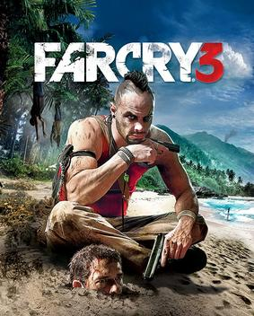
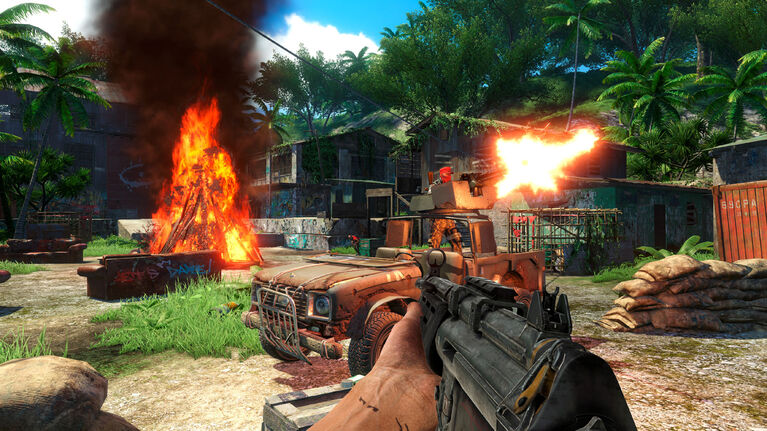
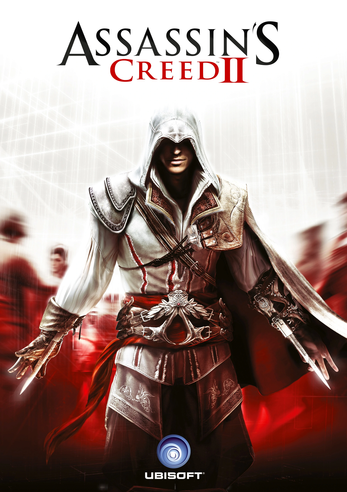
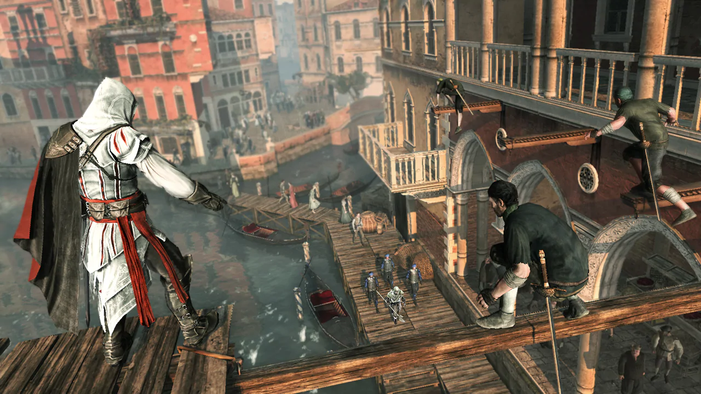
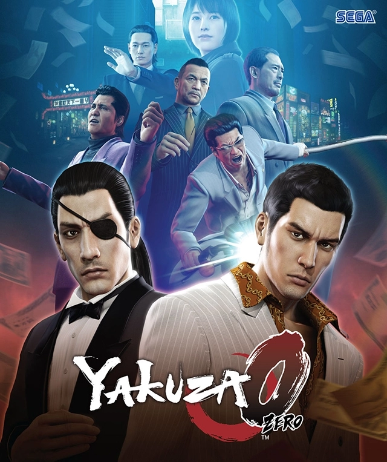
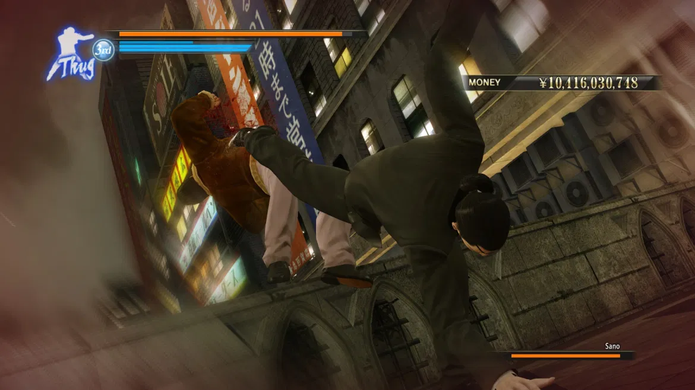

Game-game bagus yang bisa dimainkan di laptop dengan RAM 4gb
1. Far cry 3
 
Farcry 3 adalah game FPS ( First Person Shooter ) yang dikembangkan oleh Ubisoft Montreal dan diterbitkan oleh Ubisoft. Game ini adalah seri ketiga dari Farcry series . Permainan berlangsung di Kepulauan fiksi yang bernama kepulauan Rock, sebuah kepulauan tropis yang dapat dijelajahi dengan bebas oleh para pemain. Gameplay berfokus pada pertempuran dan eksplorasi. Pemain dapat menggunakan berbagai senjata untuk mengalahkan musuh manusia dan satwa liar yang tidak bersahabat, dan permainan ini menampilkan elemen game RPG seperti skill tree dan system experience. Game ini cocok untuk kalian yang menyukai game FPS dengan dunia yang luas dan elemen RPG di dalamnya.
Link Download
Far cry 3Minimum Spesifikasi :
Processor: 2.66 GHz Intel Core 2 Duo E6700 or 3.00 GHz AMD Athlon 64 X2 6000+ or better
RAM: 4 GB
Video Card: 512 MB DirectX 9.0-compliant card with Shader Model 4.0 or higher
2. Assassins creed 2
 
Assassins creed 2 adalah game Action-Adventure yang dikembangkan oleh Ubisoft Montreal dan diterbitkan oleh Ubisoft. Di game ini, pemain berperan sebagai seorang Assassin yang bernama Ezio Auditore. Pemain dapat memanjat dan melakukan freerun layaknya seorang Assassin melewati setiap bangunan di game ini, selain keseruan dalam melakukan freerun pemain juga dapat menggunakan berbagai macam senjata seperti pedang, hidden blade dll. Selain dari segi gameplay, game ini juga mempunyai Storyline yang sangat bagus. Game ini cocok untuk kalian yang suka lompat-lompat seperti orang parkour dan juga kalian yang suka game bertemakan ala ninja.
Link Download
Assassins creed 2Minimum Spesifikasi :
Processor: 1.8 GHz Intel Core2 Duo or 2.4 GHz AMD Athlon 64 X2 (2.6 GHz Intel Core 2 Duo E6700 or AMD Athlon 64 X2 6000+ or higher recommended)
RAM: 1.5 GB Windows XP / 2 GB Windows Vista, Windows 7 (2 GB / 4 GB recommended)
Video Card: 256 MB DirectX 9.0c–compliant card with Shader Model 3.0 or higher (512 MB recommended)
3. Yakuza O
 
Yakuza 0 adalah game Action-Adventure yang dikembangkan dan diterbitkan oleh Sega. Game ini mengusung tema open world dengan perspective orang ketiga ( TPP) yang berlatar di daerah yang bernama Kamurocho dan Sotenbori, pemain akan memainkan seorang Yakuza yang bernama Kiryu Kazuma, gameplay nya sendiri mirip dengan game Kenka Banchou yang ada di console PSP dimana pemain akan melawan musuh-musuh yang ditemuinya di jalan maupun di dalam sebuah misi. Game ini cocok untuk kalian yang suka film Crows zero alias Genji karena di dalam game ini kalian bisa berkelahi dengan tangan kosong seperti Genji yang ada di film Crows zero.
Link Download
Yakuza 0Minimum Spesifikasi :
Processor: Intel Core i5-3470 | AMD FX-6300
Memory: 4 GB RAM
Graphics: Nvidia GeForce GTX 560 | AMD Radeon HD 6870